GOOGLE ADS PERFORMANCE REPORT
この報告書は、7/19〜7/29の広告成果の報告と、Google Ads・GA4・Microsoft Clarity・キーワードプランナーを星野さんご自身で読めるようにするための練習帳を兼ねています。
先に前提を1つ置きます。対象の11日間のうち、広告の着地先である新LP /kobe/ が存在したのは 7/28〜7/29 の最後の2日だけです。したがって本書は新LPの「判定」ではありません。8/18の継続/停止判断に使う基準値をつくるための書類として読んでください。2日分の数字で新旧LPの優劣を決めることはできず、本書もその判断はしていません。
もう1つ、色と記号の使い分けです。この報告書には「断定できる数字」と「傾向としか言えない数字」が混在しています。読み手が両者を取り違えないよう、表のセルを4つに塗り分けています。色が見えない環境でも区別できるよう、記号を必ず併記しています。
| 表示 | 意味 | 読み方 |
|---|---|---|
| ✓ 緑 | 基準クリア | 設定した判断ラインを満たしている数字 |
| ▼ 赤 | 基準未達 | 判断ラインを下回っている、または上限を超えている数字 |
| ▲ 琥珀 | 中間（黄色ゾーン） | 上限内だが目標には届いていない。継続の可否を保留する水準 |
| — グレー n不足 | 判定不能 | 母数が足りず、率としての比較ができない数字。件数の事実としてだけ読む |
母数の目安として、n<30の数値には必ず n不足 を付けています。このバッジが付いた数字は「◯件だった」という事実としては使えますが、「◯%だから良い/悪い」という比較には使えません。バッジが付いた数字を根拠に施策を決めないでください。
本文中には次の2種類のボックスが繰り返し出てきます。
各章の数字が「どこまでを支えていて、どこから先は支えていないか」を明示するボックスです。数字を渡すだけだと過剰に読まれるため、言えない範囲を毎回セットで書いています。
11日間でクリック59・費用¥5,558・CV1件、CPAは通算¥5,558で上限¥6,000の内側ですが目標¥2,000には届いておらず、継続/停止の判断は8/18まで保留する水準です。
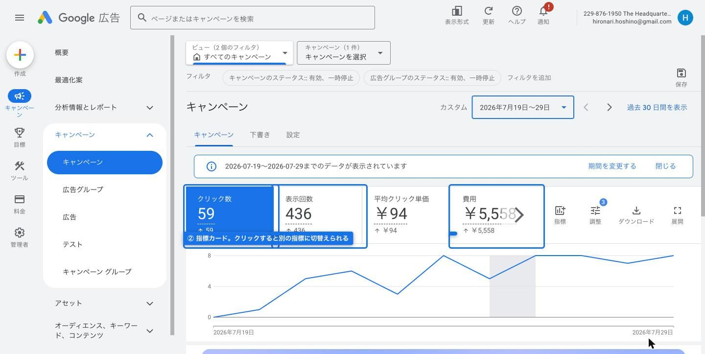
新LP /kobe/ が存在したのは7/28以降なので、9日間と2日間を分けて並べます。日数が違うため、比較のために1日あたり換算も添えます。
| 指標 | 7/19〜27 旧LP・9日 | 7/28〜29 新LP・2日 | 1日あたり換算 | 通算11日 |
|---|---|---|---|---|
| 表示回数 | 341 | 95 | 旧 37.9 → 新 47.5 | 436 |
| クリック | 44 | 15 n不足 | 旧 4.9 → 新 7.5 | 59 |
| CTR | 12.90% | 15.79% | — | 13.53% |
| 平均CPC | ¥94 | ¥95 | — | ¥94 |
| 費用 | ¥4,134 | ¥1,424 | 旧 ¥459 → 新 ¥712 | ¥5,558 |
| CV（送信） | 1 n不足 | 0 n不足 | — | 1 n不足 |
| CPA | ▲ ¥4,134 | — CV0のため算出不能 n不足 | — | ▲ ¥5,558 |
| インプレッションシェア（IS） | 32.28% | 32.87% | — | 32.41% |
| IS損失（ランク） | ▼ 61.42% | ▼ 67.13% | — | ▼ 62.68% |
| IS損失（予算） | 6.30% | ✓ 0.00% | — | ✓ 4.91% |
通算の1日あたりは表示 39.6・クリック 5.4・費用 ¥505 です。CTR・CPC・CPA・ISは率と平均なので1日あたりに割ることに意味がなく、「—」にしています。
2日間のCTR 15.79% は9日間の 12.90% より高い数字ですが、これを新LPの成果として読まないでください。広告文はこの期間中に変更していません。7/27にシニア系の除外キーワード6本を追加しており、時期が重なっています。詳細は章2と章8を参照してください。
この報告書は5つの判断（A1〜A5）に答えるために構成されています。各章のバッジはその章がどの判断を支えるかを示します。現時点での仕分けは次のとおりです。
| 判断 | 今の材料で言えること | 結論 | 該当章 |
|---|---|---|---|
| A1 継続 / 停止 | CPAは ¥4,134（7/19〜27）、通算 ¥5,558。上限 ¥6,000 の内側だが目標 ¥2,000 は超えている。CVは通算1件で母数が足りない n不足 | ▲ 8/18まで判断保留 | 章13 |
| A2 フォーム改修 | /contact/ の滞在は 2秒、CTAクリック率は 23.1% で押されている一方、送信は 0件。計測（preventDefault＋fetch内で contact_submit 発火）は健全と確認済み |
▼ ヘッダー統一と送信ボタン位置は今すぐ。 フォーム項目の変更とLINE導線は計測に触れるため8/18判定後 |
章12 |
| A3 除外KW「40代」 | 「シェア ハウス 神戸 40 代」が7/28に新規出現。クリックは 0（表示のみ）。既存の除外 18本に40代は入っていない | ▲ 1分で実施可。方針次第 | 章5 |
| A4 神大LPへの追加投資 | 神大系4語句のクリック合計は 1 n不足。「神戸 大学 一人暮らし 家賃」の品質スコアは 3/10でアカウント内最弱 | — 追加投資は保留。ただし8/18時点でも母数は揃わない見込み（章16）。母数なしで判断するか、神大系に予算を寄せて母数を作るかの二択 | 章6 |
| A5 日予算 ¥500 の引き上げ | IS損失（予算）は通算 4.91%、7/28〜29は 0.00%。表示が出ていない理由は予算ではない | ▲ 表示を増やす目的では不要。ただし判定母数の確保という別の理由がある | 章6・章13 |
CPAの判断ラインは2本あります。目標 ¥2,000（ひつじ不動産の問い合わせ課金と同額）と、上限 ¥6,000（空室1ヶ月の機会損失にCV→契約率をかけた保守側の値）です。現状 ¥4,134（7/19〜27）はこの2本の間、琥珀の帯にあります。
帯は0〜¥7,000を全幅としています。緑（0〜¥2,000）は目標クリア、琥珀（¥2,000〜¥6,000）は上限内だが目標未達、赤（¥6,000超）は撤退ラインです。通算の ¥5,558 も琥珀の中で、赤の手前にあります。どちらもCV 1件から出た数字なので、位置そのものが1件の増減で大きく動きます。
2日間と9日間の並びから、新LPが旧LPより良いか悪いかは言えません。新LPが存在した期間のCVは0件ですが、これは判定に足りる母数ではなく、新LPの評価材料にはなりません（章13）。CPAの位置も、CV1件を分母にした値なので「¥4,134が実力値」とは言えません。CTRの差についても、広告文が未変更で7/27の除外追加と時期が重なるため、LP変更の効果として切り出すことはできません。
この章は、数字が動いた原因を施策に紐づけるための章です。とくにCTRの変化を新LPの成果と誤読しないための予防装置として置いています。
11日間は「同じ条件で回した11日」ではありません。除外キーワードの追加、着地先の変更、表示速度の対応が期間中に入っています。数字の変化を見るときは、まずこの並びと日付を突き合わせてください。以下は日付と変更内容だけを並べたものです。数値の評価は各章で行います。
/ から新LP /kobe/ へ変更（対象は「広告グループ 1 個」と「02-エリア名」）。継続/停止の判定日を8/1から8/18へ延期。着地先の変更/kobe/ の日本語フォント読み込みを非ブロッキング化し、モバイルの表示速度に対応。LP側の変更この並びから読み取ってほしいのは2点です。1つ目は、新LPが稼働していたのは7/28と7/29の2日だけであること。2つ目は、CTRに影響しうる除外キーワードの追加（7/25・7/27）が、LP切り替え（7/28）の直前に入っていることです。除外を足せば無関係な検索での表示が減り、残った表示のCTRは上がりやすくなります。したがって7/28以降のCTRを新LPの成果として読むことはできません。広告文はこの11日間で変更していません。
変更が複数重なった期間では、どの変更がどれだけ効いたかを分離できません。除外追加とLP切り替えが1日違いで入っているため、7/28以降の数字の動きをどちらか一方に帰属させることはできません。分離するには、次の変更を入れずに一定期間回す必要があります（判定日を8/18に置いている理由です）。
以降の章は、すべてこの図のどこか1段を詳しく見たものです。
下の図は、新LPが稼働していた7/28〜7/29の実測をつないだものです。検索需要の段だけはキーワードプランナーの月間値なので、他の段とは期間の単位が違います。
一番細いのは /contact/ 以降ですが、n=2なので確定ではありません。
段ごとに見る場所が違います。数字を自分で追うときの対応表です。
| ファネルの段 | 取得ツール / 画面 | 備考 |
|---|---|---|
| 検索需要 | キーワードプランナー（Ads → ツール → プランニング） | 月間平均検索ボリューム。自社ぶんではなく市場全体 |
| 表示回数 | Google Ads（キャンペーン / キーワード） | IS・IS損失の列も同じ画面で足せる |
| クリック | Google Ads（キャンペーン / キーワード / 検索語句） | CTR・平均CPCも同じ行 |
| LP到達・滞在時間 | GA4「ページとスクリーン」 | ユーザー数と平均エンゲージメント時間を見る |
| CTAクリック | GA4「イベント」→ cta_click | 件数とユーザー数の両方を見る（1人が複数回押す） |
| 送信（CV） | GA4「イベント」→ contact_submit ＋ Adsのコンバージョン列 | イベント一覧に行が無ければ期間中0回 |
| LP内の読まれ方 | Microsoft Clarity（ヒートマップ / スクロール） | どこまで読まれ、どこが押されたか |
| 内見・契約 | ツールに存在しない | 自分で記録しないと永久に埋まらない段です。問い合わせ受信日・内見実施日・契約日を手元の表に残す運用が必要（章14） |
この図は7/28〜7/29の2日間だけを縦につないだものです。各段の歩留まり％は、母数が最大でも13ユーザーなので、率としての比較には足りません。「どの段が本当のボトルネックか」はこの図では確定できず、以降の章でそれぞれの段の中身を見て、確度の高い順に並べ直します。
神戸×シェアハウスの検索需要は月590回で、IS100%という到達不可能な仮定を置いても期待CVは月1.81件です。広告単体で月5件のCVを作る設計は、入札や予算の調整では届きません。
ここまでの章で見てきた表示回数・クリック数は「11日間で実際に起きたこと」でした。この章は一段上流に戻って、そもそも神戸でシェアハウスを探している人が月に何回検索しているのかを見ます。キーワードプランナーは実績ではなく市場規模のデータなので、n不足の問題がありません。この報告書の中で、もっとも断定的に読める数字です。
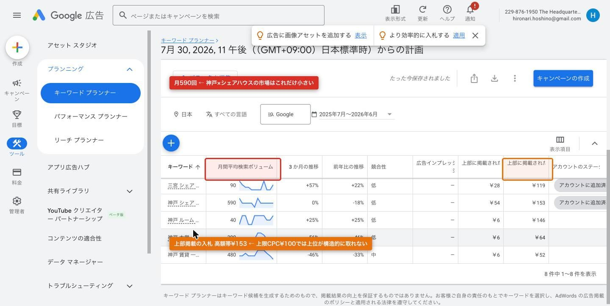
| キーワード | 月間平均 検索ボリューム | 3か月 推移 | 前年比 | 競合性 | 上部掲載入札 低〜高 | アカウント 登録 |
|---|---|---|---|---|---|---|
| シェア ハウス 神戸 / 神戸 シェア ハウス | 590 | 0% | -18% | 低 | ¥54〜¥153 | 登録済み |
| 神戸 賃貸 一人暮らし | 480 | -46% | -33% | 中 | ¥6〜¥52 | なし |
| 神戸 大学 一人暮らし | 390 | -56% | -46% | 低 | ¥6〜¥64 | なし |
| 三宮 シェア ハウス | 90 | +57% | +22% | 低 | ¥28〜¥119 | 登録済み |
| 神戸 ルーム シェア | 40 | +25% | +25% | 低 | ¥6〜¥146 | なし |
| （参考）シェア ハウス 大阪 | 3,600 | +24% | -18% | 中 | ¥52〜¥230 | なし |
| （参考）シェア ハウス 東京 | 8,100 | 0% | -19% | 中 | ¥45〜¥248 | なし |
期間は2025年7月〜2026年6月、地域は日本です。
主力KW「シェアハウス 神戸／神戸 シェアハウス」は月590回です。参考に並べた大阪3,600回は約6倍、東京8,100回は約14倍です。神戸は同じ商売を同じやり方でやっても、上流の水量が一桁違います。これは運用の巧拙ではなく市場の条件です。
この590回を上限まで取り切れたと仮定して、期待CVを置きます。
| 仮定 | 値 | 根拠 |
|---|---|---|
| 月間検索ボリューム | 590回 | キーワードプランナー実測 |
| インプレッションシェア | 100%（非現実的な上限） | 実績は32.41% |
| CTR | 13.53% | 11日間の実績CTR |
| 月間クリック（理論上限） | 79.8クリック | 590 × 13.53% |
| CVR | 2.27% | 旧LP期間（7/19〜27）の実績 |
| 月間期待CV（理論上限） | 1.81件 | 79.8 × 2.27% |
表示機会を1回も取りこぼさないという、実務上ありえない仮定を置いても月1.81件です。実績のIS 32.41%を当てればこれの3分の1になります。つまり「広告だけで月5件のCVを作る」という目標は、入札を上げても予算を増やしても構造的に届きません。留保なしで言えるのは月79.8クリックという上限までです。CV換算はn=1由来のCVR2.27%を係数として経由するため、ここから先は試算です（章13で同じ留保を置いています）。月5件を狙うなら、広告以外の流入（SEO・ポータル・LINE・紹介）を足すか、目標件数そのものを市場に合わせて置き直すかのどちらかになります。
主力KW「シェアハウス 神戸」の上部掲載入札単価は¥54〜¥153で、現在の上限CPCは¥100です。つまり高額帯で競っている枠には、そもそも入札額が届いていません。競合性の表示は「低」ですが、これは競合の数の話であって、上位枠の値段の話ではありません。この¥100 vs ¥153 のギャップが、章6で見る「ランクによる損失62.68%」の原因側にあたります。章6ではその損失の内訳を、章7では損失の相手が誰なのかを見ます。
「神戸 大学 一人暮らし」は月390回あり、単体では小さくない数字です。ただし3か月推移-56%・前年比-46%で、市場そのものが縮小方向の数字を出しています。季節性（入学期を外れた7月時点のデータ）と構造的な減少のどちらなのかは、このデータだけでは分けられません。神大向けの投資判断（A4）では、章6の品質スコア（神大系KWがQS3〜6）とこの縮小トレンドを重ねて見る必要があります。
現在アカウントに入っていないKWを、市場規模の大きい順に並べます。ここで言えるのは「市場がどれだけあるか」までです。入れれば取れるとは言えません。表示されるかどうかは章6のランク（品質スコア×入札）に依存し、CVするかどうかは検索意図が賃貸単身向けかシェアハウス向けかによります。
| 候補KW | 月間ボリューム | 上部掲載入札 高額帯 | 市場側の注意 |
|---|---|---|---|
| 神戸 賃貸 一人暮らし | 480 | ¥52 | 3か月-46%。意図が通常賃貸寄りの可能性 |
| 神戸 大学 一人暮らし | 390 | ¥64 | 3か月-56%・前年比-46%と縮小 |
| 神戸 ルーム シェア | 40 | ¥146 | 伸びているが規模が小さい。高額帯が上限CPCを超える |
キーワードプランナーのボリュームは推定値のレンジを丸めたもので、実際に自社の広告が何回表示されるかとは別物です。「競合性 低」は入札している広告主の数の指標であり、上位枠が安く取れることを意味しません（実際に高額帯は¥153です）。また、候補KWを追加したときのCVRは未知です。上流の水量は測れましたが、そこから下流に何件落ちるかは出してみるまで判定できません。
7/25・7/27に追加した除外18本は効いていて、直近2日のシニア系検索語句はゼロです。一方で「40代」が除外リストから漏れており、実際に表示されています。
章4は「市場に何語あるか」でした。この章は「その市場のうち、実際にどの言葉でこの広告が出たか」です。前章のボリュームは推定値でしたが、ここは実際に起きたことの記録です。期間は新LP着地後の7/28〜7/29のみ、17語句です。
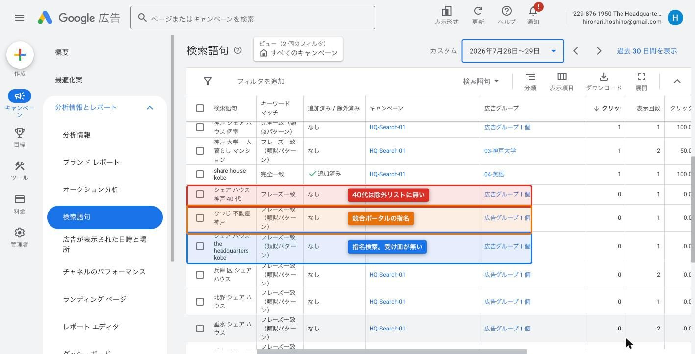
| 分類 | 検索語句 | 一致タイプ | 登録状況 | 広告グループ | クリック |
|---|---|---|---|---|---|
| 地域主力 | シェア ハウス 神戸 | 完全一致 | 追加済み | 広告グループ 1 個 | 5 |
| シェア ハウス 神戸 女性 | フレーズ一致 | なし | 広告グループ 1 個 | 1 | |
| 神戸 シェア ハウス | 完全一致（類似パターン） | なし | 広告グループ 1 個 | 1 | |
| 神戸 シェア ハウス 個室 | 完全一致（類似パターン） | なし | 広告グループ 1 個 | 1 | |
| 神戸 市 ルーム シェア | フレーズ一致（類似パターン） | なし | 広告グループ 1 個 | 0 | |
| 神大系 | 神戸 大学 一人暮らし マンション | フレーズ一致（類似パターン） | なし | 03-神戸大学 | 1 |
| 神戸 大学 一人暮らし 家賃 | 完全一致 | 追加済み | 03-神戸大学 | 0 | |
| 神戸 大学 一人暮らし | フレーズ一致（類似パターン） | なし | 03-神戸大学 | 0 | |
| 神戸 大学 一人暮らし 女子 | フレーズ一致（類似パターン） | なし | 03-神戸大学 | 0 | |
| 英語 | share house kobe | 完全一致 | 追加済み | 04-英語 | 1 |
| 自社指名 | シェア ハウス the headquarters kobe | フレーズ一致（類似パターン） | なし | 広告グループ 1 個 | 0 |
| 競合指名 | ひつじ 不動産 神戸 | フレーズ一致（類似パターン） | なし | 広告グループ 1 個 | 0 |
| 地域拡張 | 兵庫 区 シェア ハウス | フレーズ一致（類似パターン） | なし | 広告グループ 1 個 | 0 |
| 北野 シェア ハウス | フレーズ一致（類似パターン） | なし | 広告グループ 1 個 | 0 | |
| 垂水 シェア ハウス | フレーズ一致（類似パターン） | なし | 広告グループ 1 個 | 0 | |
| 垂水 区 シェア ハウス | フレーズ一致（類似パターン） | なし | 広告グループ 1 個 | 0 | |
| 要除外候補 | シェア ハウス 神戸 40 代 | フレーズ一致 | なし（除外リストにも無い） | 広告グループ 1 個 | 0 |
1. シニア系の検索語句はゼロです。7/25に4本（高齢者/食事付き/食事 付き/長田）、7/27に6本（50代/60代/70代/80代/シニア/高齢）を追加し、除外は合計18本になっています。追加の翌日以降の検索語句にシニア系が1語句も出ていません。除外の追加という操作と、該当語句の消滅という結果が時系列でつながっています。ただし本書が持っている検索語句データは7/28〜29分のみで、除外前にシニア系語句が何回表示されていたかの実数は本書のデータ範囲外です。したがってここで言えるのは「除外が効いていない証拠は出ていない」までです。
2. 「シェア ハウス 神戸 40 代」が新規に出現しました。除外18本のリストは50代・60代・70代・80代・シニア・高齢を押さえていますが、40代が入っていません。7/28に実際にこの語句で表示が発生しています。クリックは0なので費用は出ておらず、緊急度は高くありません。ただし塞ぐ作業は1分で終わります（A3の判断材料）。年代で刻む除外は「50代以上」のような範囲指定ができないため、40代を入れても30代・20代が抜けたままです。年代ごとに追加するか、そもそも年代語句を拾わない構成にするかは別途の設計になります。
3. 自社指名が発生しています。「シェア ハウス the headquarters kobe」＝屋号を知った上での検索です。この語句は本来もっとも成約に近い層ですが、現状は専用の広告グループも広告文もなく、フレーズ一致の類似パターンで偶然拾っている状態です。受け皿が未整備で、クリックも0です。指名検索が出始めたという事実だけを、8/18判定の基準値として記録します。
4. 競合ポータルの指名を拾っています。「ひつじ 不動産 神戸」はシェアハウス系ポータル「ひつじ不動産」の指名検索です。クリック0で費用は出ていません。この語句は比較検討フェーズの層である一方、ポータル掲載物件を探している意図でもあるため、拾い続けるべきかどうかはこの2日のデータでは判定できません。なおCPA基準の¥2,000は、このひつじ不動産の問い合わせ課金（平均家賃の5%相当）を根拠に置いています（章19参照）。
5. 神大系4語句のクリック合計は1です。n不足 「神戸 大学 一人暮らし マンション」で1クリック、他の3語句（家賃・一人暮らし・女子）は0クリックです。この段の母数は4語句・クリック1件です。件数の事実としては読めますが、率としての比較には足りません。ここで記録するのは「クリックされていない」という事実だけで、原因は判定しません。広告文が合っていないのか、表示位置が低いのか、そもそも7月末という時期に神大生が部屋を探していないのか、この表では切り分けられません。原因側の材料は章6の品質スコア（神大系はQS3〜6）と章4の市場トレンド（3か月-56%）にあり、A4の判断はそこと合わせて8/18に置きます。
期間が7/28〜7/29の2日間だけなので、この17語句は「この広告が拾える語句の全体像」ではありません。11日間通算では別の語句が出ている可能性があります。また、クリック0の語句について「見られたが選ばれなかった」とは言えません。表示位置が下部だった場合、そもそも視界に入っていません。地域拡張系（兵庫区・北野・垂水）が0クリックなのも、需要がないのか順位が低いのかはこの表では分かれません。
表示が伸びない主因は広告ランクで、予算ではありません。通算のインプレッションシェア損失はランク62.68%・予算4.91%で、直近2日の予算損失は0.00%です。日予算¥500を上げても表示回数は増えません。
章4で見たとおり神戸の市場は月590回しかありません。その小さな市場のうち、実際に自社の広告が出られたのは32.41%です。残りの3分の2をなぜ取れていないのか、その内訳がインプレッションシェア（IS）の損失列に出ます。損失の理由は「ランク」と「予算」の2つに分解され、これは予算を上げるべきか（A5）を判断する唯一の直接的な指標です。
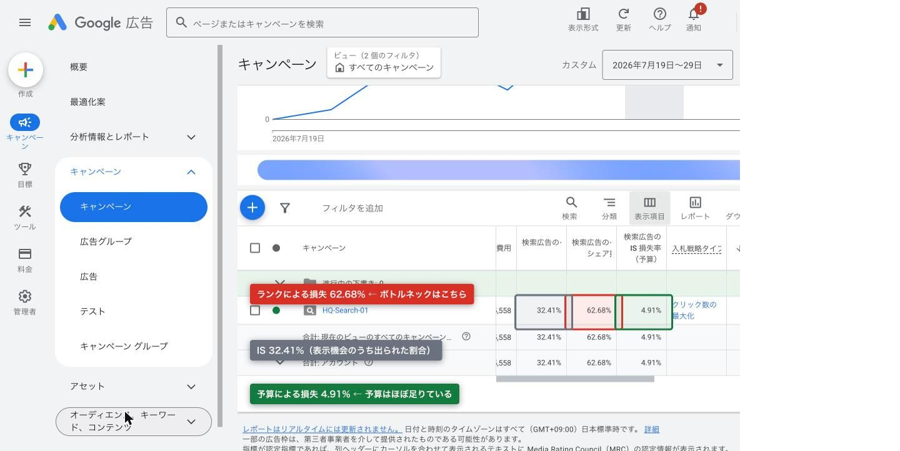
| 期間 | 表示回数 | IS | 損失（ランク） | 損失（予算） |
|---|---|---|---|---|
| 7/19〜7/29（通算11日） | 436 | 32.41% | 62.68% | 4.91% |
| 7/19〜7/27（旧LP・9日） | 341 | 32.28% | 61.42% | 6.30% |
| 7/28〜7/29（新LP・2日） | 95 | 32.87% | 67.13% | 0.00% |
3期間すべてでランク損失が予算損失を大きく上回っています。結論として、日予算¥500を引き上げても表示は増えません。直近2日は予算による損失が0.00%で、予算が理由で取りこぼした表示機会は1回もありません。これは構造的な数値なので断定できます。A5（予算引き上げの是非）に対する答えは、この表単体で出ます。予算を増やす前に、ランクを構成する要素（入札額と品質スコア）を動かす必要があります。
ランクは大きく「入札額 × 品質スコア」で決まります。入札側は章4で見たとおり上限CPC¥100に対して上部掲載入札の高額帯が¥153で、届いていません。品質側が次の表です。
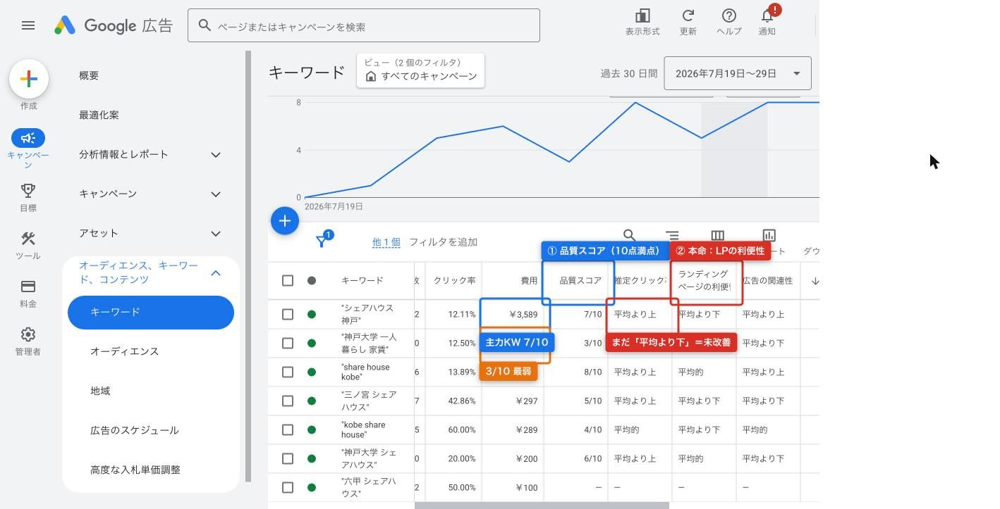
| キーワード | 広告グループ | 表示 | クリック | CTR | 費用 | QS | 推定CTR | LPの利便性 | 広告の関連性 |
|---|---|---|---|---|---|---|---|---|---|
| "シェアハウス 神戸" | 広告グループ 1 個 | 322 | 39 | 12.11% | ¥3,589 | 7 | 平均より上 | 平均より下 | 平均より上 |
| "share house kobe" | 04-英語 | 36 | 5 | 13.89% | ¥489 | 8 | 平均より上 | 平均的 | 平均より上 |
| "神戸大学 シェアハウス" | 03-神戸大学 | 10 | 2 | 20.00% n不足 | ¥200 | 6 | 平均より上 | 平均的 | 平均より下 |
| "三ノ宮 シェアハウス" | 02-エリア名 | 7 | 3 | 42.86% n不足 | ¥297 | 5 | 平均より上 | 平均より下 | 平均より下 |
| "kobe share house" | 04-英語 | 5 | 3 | 60.00% n不足 | ¥289 | 4 | 平均的 | 平均より下 | 平均的 |
| "神戸大学 一人暮らし 家賃" | 03-神戸大学 | 40 | 5 | 12.50% | ¥495 | 3 | 平均的 | 平均より下 | 平均より下 |
「シェアハウス 神戸」は表示322回・クリック39回・費用¥3,589で、KW別費用の67.0%を占めています。このKWがこのキャンペーンの主戦場です。品質スコアは7で、推定CTRと広告の関連性はいずれも「平均より上」。3項目のうち唯一「平均より下」なのがLPの利便性です。ここが主力KWのランクを押し下げている箇所であり、7/28の新LP /kobe/ 差し替えはこの項目に対する打ち手です。
品質スコアの3項目（推定CTR・LPの利便性・広告の関連性）は、直近数ヶ月の履歴データをもとに算出される相対評価です。7/28に差し替えたLPが、2日でこの評価に反映されることはありません。したがって次の判定日である8/18に確認しても、「LPの利便性＝平均より下」の表示が残っている可能性は高いです。これは新LPが機能していないことの証拠ではなく、指標の更新が遅いという性質です。8/18時点でLP側を評価するときは、品質スコアではなく章9のPageSpeed実測値・滞在時間と、章10のスクロール到達率を見てください。品質スコアのLP利便性が動くかどうかは、9月以降の確認事項です。
もっとも低いのは「神戸大学 一人暮らし 家賃」でQS3、LPの利便性と広告の関連性がともに「平均より下」です。表示40回・クリック5回・費用¥495。同じ神大グループの「神戸大学 シェアハウス」もQS6で広告の関連性が「平均より下」です。神大系は着地先が /kobe-university/ のまま据え置きで、7/28のLP差し替え対象に入っていません。章4で見た市場トレンド（「神戸 大学 一人暮らし」は3か月-56%・前年比-46%）と、章5のクリック合計1という事実を重ねると、A4（神大LPに追加投資するか撤退するか）の材料は揃いつつあります。ただし現時点の判断は保留です。QS3という数字は改善余地の存在を示すだけで、改善したときにCVが出るかどうかは示しません。
QSが4以下の2本（"kobe share house" QS4・"神戸大学 一人暮らし 家賃" QS3）は、いずれも着地先が /kobe/ ではないグループに属しています。着地先とKWの一致度を上げる、という打ち手の候補としては挙げられますが、英語グループについては /kobe/ が日本語のみのため単純な差し替えができません。
品質スコアは同じKWに入札している他の広告主との相対評価です。「平均より下」が「平均的」に変わったとき、自社が良くなったのか他社が下がったのかは区別できません。したがって絶対的な改善量は測れず、点数の推移だけを目標に置くことはできません。
ランク損失62.68%の内訳（入札不足によるものか、品質スコアによるものか）は、Adsの画面上で分離して表示されません。上限CPC¥100 < 高額帯¥153 という事実と、主力KWのQS7という事実の両方があるだけで、どちらが何%寄与しているかは出せません。また、ランク損失は「オークションに参加できなかった」場合と「参加して負けた」場合の両方を含みます。その内訳は章7のオークション分析で近似します。
QS3のKWに投資すればCVが出るとは言えません。品質スコアはランクの構成要素であって、成約可能性の指標ではありません。
章6のランク損失62.68%の大半は、競合に負けた結果ではありません。重複率が13〜20%しかない＝そもそも同じオークションに参加できていないことによる損失です。
ランク損失には2つの中身があります。(a) オークションに参加して競合に負けた、(b) ランクのしきい値に届かずオークションそのものに参加できなかった。Adsの画面はこれを分離してくれませんが、オークション分析の「重複率」から近似できます。重複率は「自社が出たオークションのうち、その競合も同時に出ていた割合」です。
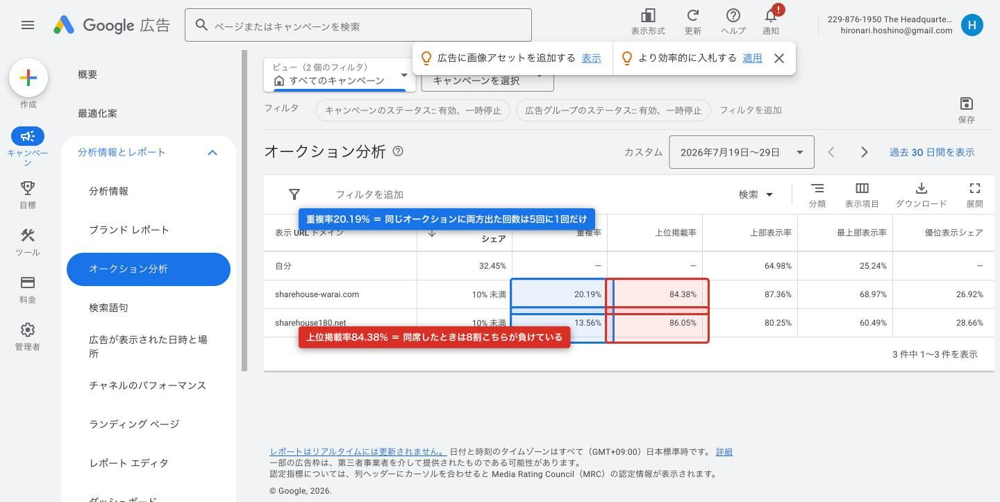
| ドメイン | IS | 重複率 | 上位掲載率 | ページ上部 表示率 | ページ最上部 表示率 | 上位掲載 シェア |
|---|---|---|---|---|---|---|
| 自分（theheadquarters.jp） | 32.45% | — | — | 64.98% | 25.24% | — |
| sharehouse-warai.com 和楽居（神戸ローカルの直接競合） | 10% 未満 | 20.19% | 84.38% | 87.36% | 68.97% | 26.92% |
| sharehouse180.net シェア180 | 10% 未満 | 13.56% | 86.05% | 80.25% | 60.49% | 28.66% |
和楽居の重複率は20.19%、シェア180は13.56%です。同じオークションに両方が出た回数は、5回に1回から7回に1回しかありません。残りの8割前後は、自社が出たときに相手が出ていない（＝相手が競合として存在していない）オークションです。
ここから逆算します。章6のランク損失は62.68%ですが、その大部分の場面で主要競合はそもそも同席していません。したがって、取れていない表示機会の大半は「競合に入札で負けた」のではなく「自社のランクがしきい値に届かず、オークションに参加できなかった」ものです。この解釈は重複率という実測値から近似できます。
この区別は打ち手を変えます。競合に負けているなら「相手より高く入札する」が答えになりますが、参加できていないなら競合の入札額とは無関係に、自社の広告ランクの絶対水準（上限CPC¥100と品質スコア）を上げないと1回も増えません。予算はここでも関係しません（A5）。
一方、同席した場合の上位掲載率は和楽居84.38%・シェア18086.05%です。相手が出てくる場面では、8割以上こちらが下に置かれています。ページ最上部表示率も自社25.24%に対し和楽居68.97%・シェア18060.49%で、差は明確です。つまり「相手が出るときは負けるが、そもそも同席が少ない」という状態です。
ただし相手のISはいずれも「10%未満」で、この市場での露出量自体は自社（32.45%）より小さい可能性があります。ISが10%未満の相手に上位掲載率84%で負けているのは、相手が「出るときだけ強い入札で出ている」形とも読めますが、これは推測です。
和楽居（sharehouse-warai.com）は神戸ローカルのシェアハウス事業者で、直接競合です。エリア・業態・想定入居者が重なるため、8/18以降も継続して重複率と上位掲載率の推移を追う対象になります。シェア180は運営規模が異なるため、同一の見方はできません。
オークション分析は「同じオークションに出た広告主」だけを表示し、しきい値割れで自社が参加できなかったオークションに誰が出ていたかは分かりません。したがって「参加できていない場面の競合は誰か」は、この画面では特定できません。
重複率から算出したランク損失の内訳（しきい値割れ vs 入札負け）は近似です。Googleは正確な分離値を出していないため、比率としての数字は書けません。
上位掲載率84%は「相手のほうが上に出た割合」であって、クリックやCVを取られた割合ではありません。順位が上でもクリックされているとは限らず、相手の成果はこの画面からは一切見えません。表示回数436の期間なので、重複率も1〜2回の増減で数ポイント動きます。
CTRは12.90%から15.79%という数字になりました。ただし広告文は7/19以降変更しておらず、この動きの原因はLP側にありません。
CTRは「広告が表示されてクリックされた割合」で、クリックされる前の指標です。着地先のLPをどう作り替えても、クリック前のユーザーには見えていません。構造上、LPの変更がCTRを動かすことはありません。
加えて、広告文は7/19の配信開始以降、一度も変更していません。分子（クリック）側を動かす操作はしていないということです。動いたのは分母（表示回数）側です。7/25に4本、7/27にシニア系6本の除外キーワードを追加し、章5で確認したとおり直近2日のシニア系検索語句はゼロになりました。クリックされる見込みのない表示が分母から抜けた結果として、率が上がっています。7/28のLP差し替えとCTRの動きは、日付が近いだけで因果関係がありません。
| 指標 | 7/19〜7/27 （旧LP・9日） | 7/28〜7/29 （新LP・2日） | 7/19〜7/29 （通算11日） |
|---|---|---|---|
| 表示回数 | 341 | 95 | 436 |
| クリック数 | 44 | 15 | 59 |
| CTR | 12.90% | 15.79% | 13.53% |
| 平均CPC | ¥94 | ¥95 | ¥94 |
| 費用 | ¥4,134 | ¥1,424 | ¥5,558 |
| 1日あたりに割った値（日数が9日と2日で揃っていないため必須） | |||
| 表示回数 / 日 | 37.9 | 47.5 | 39.6 |
| クリック / 日 | 4.89 | 7.50 | 5.36 |
| 費用 / 日 | ¥459 | ¥712 | ¥505 |
累計の「95表示・15クリック」と「341表示・44クリック」を並べても、期間の長さが違うので比較になりません。1日あたりに割ると、表示37.9→47.5、クリック4.89→7.50、費用¥459→¥712です。表示・クリック・費用のいずれも1日あたりで増えています。除外で分母が減ったのにもかかわらず1日あたりの表示が増えているので、除外以外の要因（曜日構成、競合の入札変動、Google側の配信の揺れ）も混ざっていると考えられます。n不足 後半は2日・95表示です。件数の事実としては読めますが、率としての比較には足りません。
日予算は¥500ですが、直近2日の1日あたり費用は¥712です。Googleの検索キャンペーンには、需要が多い日に日予算の最大2倍（この場合は¥1,000）まで消化してよいというルールがあり、月間ではおおむね平準化されます。¥712はこの範囲内です。
加えて章6のとおり、直近2日のIS損失（予算）は0.00%です。予算が理由で取りこぼした表示は1回もありません。予算の設定ミスや暴走ではなく、想定どおりの挙動です。ただし月次の総額を見るときは、¥500×日数ではなく実績の1日あたり費用で見積もる必要があります。
検索広告のCTRは業種によりますが一般に3〜6%が目安とされます。それに対して12.90%〜15.79%は高い水準です。フレーズ一致・完全一致のみで運用し、除外を積んでいる構成上、無関係な表示が少ないためと考えられます。ただし通算の母数は表示436回なので、水準としての傾向を示す数字として受け取ってください。8/18判定でも同水準が続いていれば、広告文と検索意図の一致は問題箇所ではないと判断できます。
平均CPCは¥94→¥95で、ほぼ動いていません。上限CPC¥100に対してほぼ張り付いており、入札は上限で頭打ちになっています。章4の上部掲載入札の高額帯¥153、章6のランク損失62.68%、章7の重複率の低さは、いずれもこの「上限に張り付いている」状態から出てきます。A5に対する打ち手が予算ではなく上限CPCである根拠は、この¥95という数字にあります。
CTRが12.90%→15.79%と動いた分のうち、除外キーワードの寄与が何ポイントかは分離できません。除外6本の追加日（7/27）と、LP差し替え日（7/28）が隣接しており、曜日構成も違います。「除外が原因である」という方向性は構造から言えますが、寄与度は出せません。
2日間・95表示のCTRを、9日間・341表示のCTRと同じ確度で扱うことはできません。この期間のCTRが恒常的な水準に変わったのかは、8/18時点でもう一度見る必要があります。
CPCが¥94→¥95と横ばいであることから「競合の入札が変わっていない」とは言えません。KWごとの構成比が変われば、競合状況が変わっても平均CPCは動かないことがあります。
新LP /kobe/ は2日間で13ユーザー・平均滞在29秒、PageSpeedモバイル90・LCP3.1秒です。速度は不良域ではなく、着地後の離脱を速度で説明することはできません。
章8までで、クリックが1日7.50件発生していることを確認しました。この章はその先、クリックしたユーザーがLPに着いてから何が起きているかをGA4で見ます。
新LP /kobe/ は7/28公開なので、使えるデータは2日分しかありません。曜日によって検索行動が変わるため、同じ曜日の同じ日数で比べます。前期間は7/28〜7/29（火・水）、比較期間は7/21〜7/22（火・水）です。前後で日数と曜日が揃っているので、章8のような1日あたりへの割り戻しは不要です。ただし母数は小さいままです。
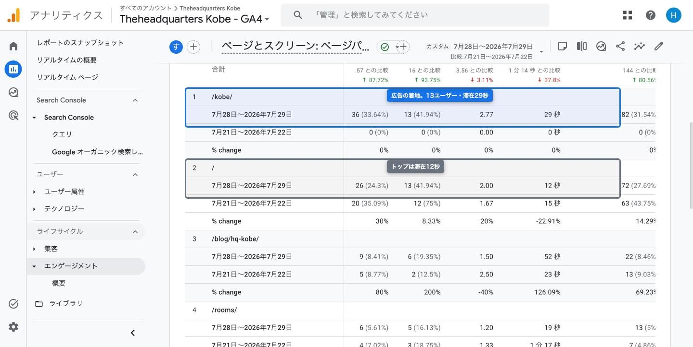
| 指標（サイト全体） | 7/28〜7/29（火水） | 7/21〜7/22（火水） |
|---|---|---|
| 表示回数 | 107 | 57 |
| アクティブユーザー | 31 | 16 |
| ユーザーあたりの平均エンゲージメント時間 | 46秒 | 74秒 |
| イベント数 | 260 | 144 |
※ 章11のイベント表では page_view のユーザー数が32人と出ます。GA4は指標ごとに集計単位（アクティブユーザー／総ユーザー）が異なるため1人ずれます。同じ数を指しているとみなして構いません。
表示回数とアクティブユーザーはいずれも約1.9倍です。広告の着地先を専用LPに変えたことで、サイトに入ってくる人数自体が増えています。n不足 この段の母数は31人と16人です。件数の事実としては読めますが、率としての比較には足りません。
ユーザーあたりの平均エンゲージメント時間は74秒から46秒という数字になりました。これを悪化と読むことはできません。この指標は「合計エンゲージメント時間 ÷ アクティブユーザー数」で、分母のユーザー数が増えると1人あたりの値は下がります。実際、アクティブユーザーは16人から31人へ約2倍、first_visit（初回訪問）は14件から29件へ増えています。新規流入が増えた期間の1人あたり平均は、構造的に下がります。母集団が入れ替わっているため、前後の平均値を同じユーザー層の行動変化として比較できません。
また、n=31とn=16の平均です。1人が長く滞在するかどうかで大きく動く水準なので、傾向としても強くは読めません。
| ページ | 表示回数 （前 / 比較） | アクティブ ユーザー | ユーザーあたり 表示回数 | 平均エンゲージメント時間 （前 / 比較） |
|---|---|---|---|---|
| /kobe/（広告の着地先） | 36 / 0 | 13 n不足 | 2.77 | 29秒 / — |
| /（トップ） | 26 / 20 | 13 n不足 | 2.00 | 12秒 / 15秒 |
| /blog/hq-kobe/ | 9 / 5 | 6 n不足 | 1.50 | 52秒 / 23秒 |
| /rooms/ | 6 / 4 | 5 n不足 | 1.20 | 19秒 / 77秒 |
| /contact/ | 2 / 0 | 2 n不足 | 1.00 | 2秒 / — |
/kobe/ は7/28公開なので比較期間の値は0です。前後比較ではなく、今後の基準値としてこの数字を置きます。トップページ / は着地先ではなくなったのに表示26回・13ユーザーあり、/kobe/ からの回遊または別経路の流入が入っています。/contact/ の2表示・滞在2秒は章12で扱います。
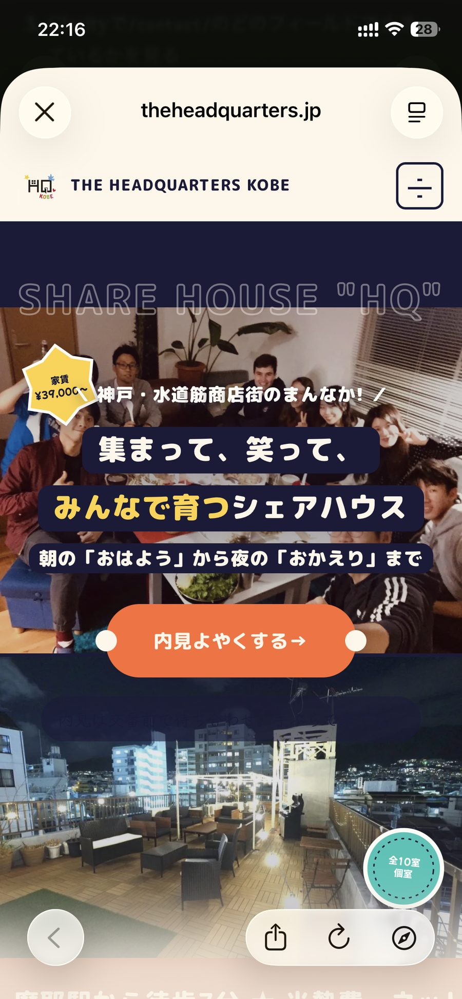
/kobe/ のファーストビュー（実機iPhone。上部70pxのstickyヘッダー＋ハンバーガー、ヒーロー、CTA「内見よやくする→」）滞在時間の解釈は母数に縛られますが、速度は1回の計測で確定する実測値です。7/29時点のPageSpeed Insights（モバイル）は次のとおりです。
| 指標 | /kobe/（7/29計測） | 基準 |
|---|---|---|
| パフォーマンススコア | 90 | 90以上で良好 |
| FCP（初回コンテンツ描画） | 2.8秒 | — |
| LCP（最大コンテンツ描画） | ▲ 3.1秒 | 2.5秒以下で良好 / 4秒超で不良 |
| TBT（総ブロッキング時間） | 50ms | — |
| CLS（レイアウトのずれ） | 0 | 0.1以下で良好 |
LCP3.1秒は「良好」（2.5秒以下）ではありませんが「不良」（4秒超）でもない中間帯です。CLSは0で、読んでいる途中に表示がずれる問題はありません。着地後の離脱を速度で説明することはできません。原因を探すなら長さと構成の側（章10）です。
この水準になったのは7/29の作業によるものです。7/28の公開直後はパフォーマンス55・LCP17.6秒で、日本語フォントの読み込みが描画をブロックしていました。7/29にフォントを非ブロッキング化し、55→90、LCP 17.6秒→3.1秒という数字になりました。つまり7/28の1日分のデータは、LCP17.6秒という状態で取られたものです。この章の /kobe/ の滞在29秒には、その1日が含まれています。速度が正常な状態でのLP評価は、実質7/29の1日分しかありません。
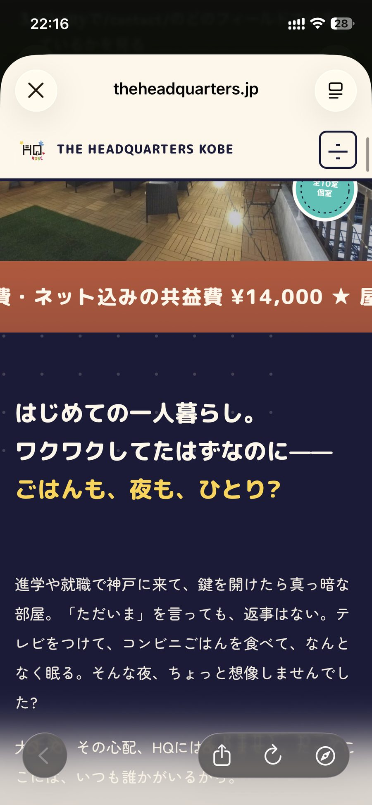
/kobe/ の中盤（実機iPhone。共益費¥14,000のオレンジ帯と「はじめての一人暮らし。」セクション）n不足 /kobe/ の平均エンゲージメント時間29秒は n=13 の平均です。1人の増減で大きく動く水準なので、傾向として受け取ってください。目安に照らすと、10秒未満は「ほぼ読まれていない」、30秒前後は「ざっと見た」、60秒以上は「読んだ」です。29秒は「ざっと見た」に相当します。トップページの12秒より長く、ユーザーあたり表示回数も2.77ページで、着地して即座に閉じられている形ではありません。読まずに離脱したのではなく、短時間で判断した可能性があります。ここまでが29秒という数字から言える範囲です。
/kobe/ のドキュメント高さは17,645pxです。iPhoneの実効表示領域（約744px。章12と同じ前提）で換算すると、上から下まで約24画面分に相当します。滞在29秒でこの長さを読み切ることは物理的にできません。つまり「29秒で判断した」というのは、ページのごく一部だけを見て判断したという意味です。どこまで読まれ、どのCTAまで到達しているかは章10のスクロールデータで見ます。この17,645pxという数字が、章10の到達率とCTA配置の議論の前提になります。
/kobe/ の29秒には、LCP17.6秒だった7/28の1日が含まれています。速度が正常だった7/29のみの滞在時間は分離していません。
比較期間に /kobe/ は存在しないため、旧LP（トップ着地）との滞在時間の比較はできません。トップページの12秒は、7/28以降は着地先ではなく回遊先の数字なので、7/21〜22の15秒と同じ役割の数字ではありません。
/rooms/ が77秒→19秒、/blog/hq-kobe/ が23秒→52秒と大きく動いていますが、いずれもn=2〜6です。数字は記録しますが、変化として解釈できる水準ではありません。
PageSpeed Insightsのスコアはラボ環境の1回の計測値です。実ユーザーの回線・端末での体感はこれと一致しないことがあります。実ユーザーデータ（Core Web Vitals）は蓄積に数週間かかるため、8/18時点でも参照できない可能性があります。
/kobe/ は5%地点で到達率50%、50%地点で20%まで落ちます。全長17,645pxに対しCTAは7本ありますが、うち5本は到達率20%以下の位置にあり、実質ファーストビューのCTA1本で勝負している状態です。
※ Clarityダッシュボードの「スクロールの奥行き 65.46%」はサイト全体（全ページ・38セッション）の平均であり、/kobe/ の値ではありません。混同しないでください。
/kobe/ のデータは 10ページビュー・21タップです n不足。個々の行動の観察には使えますが、「何%が離脱した」という割合の議論には使えません。以下は割合ではなく「位置と到達の対応」という構造の話として読んでください。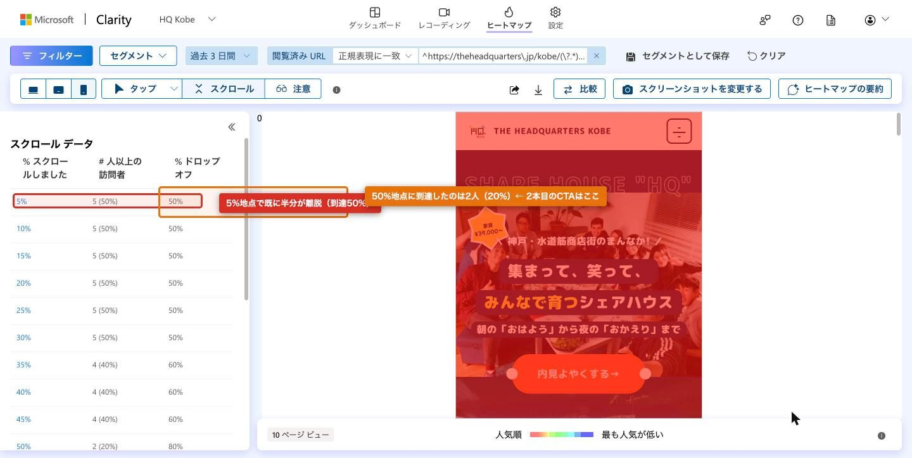
/kobe/・過去3日。5%地点の到達50%、50%地点の到達20%）| ページ内位置 | 到達人数 | 到達率 | ドロップオフ率 |
|---|---|---|---|
| 5% | 5人 n不足 | 50% | 50% |
| 25% | 5人 n不足 | 50% | 50% |
| 35% | 4人 n不足 | 40% | 60% |
| 50% | 2人 n不足 | 20% | 80% |
| 75% | 1人 n不足 | 10% | 90% |
| 100% | 1人 n不足 | 10% | 90% |
5%地点で既に半分の人が残っていません。ここから30%地点までは減らず、35%で4人、50%で2人に落ちます。10ページビューの内訳なので1人の増減で10ポイント動く水準です n不足。
LPは全長 17,645px です。CTAは7本あり、それぞれの設置位置に上のスクロール到達率を当てると次のようになります。
| # | CTA文言 | ページ内位置 | その位置の到達率 | 到達人数 |
|---|---|---|---|---|
| 1 | 内見予約 | 0.1% | 50% | 5人 |
| 2 | 内見よやくする→ | 3.1% | 50% | 5人 |
| 3 | 空室状況をきいてみる→ | 45.5% | 20% | 2人 |
| 4 | 費用のこまかい質問もどうぞ→ | 67.7% | 20% | 2人 |
| 5 | まずは内見からはじめる→ | 88.2% | 10% | 1人 |
| 6 | 内見・お問い合わせ→ | 96.7% | 10% | 1人 |
| 7 | 内見・お問い合わせ | 99.0% | 10% | 1人 |
到達率50%のCTAは、ファーストビューにある1・2の2本だけです。残りの 5本は到達率20%以下の位置にあります。つまりCTAを7本置いていても、実際に多くの人の目に入っているのはファーストビューの1本だけで、そこで勝負している構造になっています。これは母数10でも「設置位置と到達率の対応」という構造の話なので、傾向表現ながら十分に言える内容です。
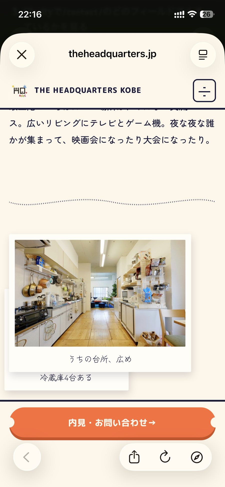
/kobe/ 中盤（下部固定CTA「内見・お問い合わせ→」。ポラロイド2枚目が1枚目の裏に隠れている）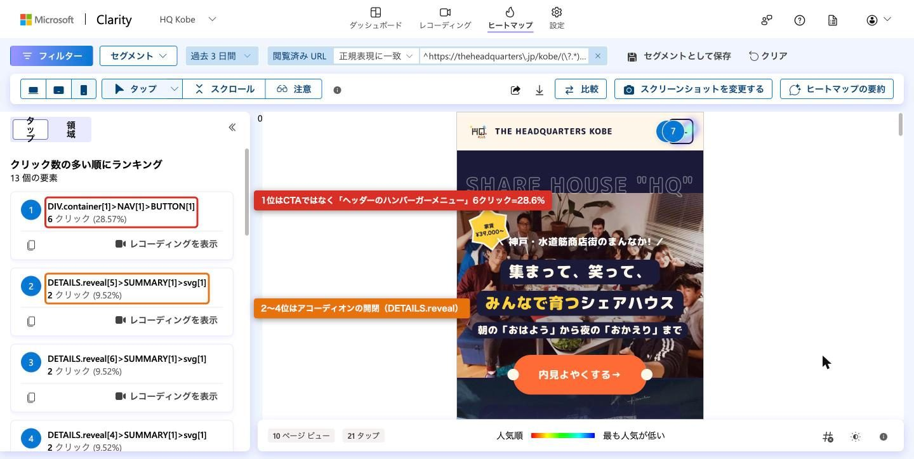
/kobe/・過去3日。10ページビュー・21タップ）タップの1位はCTAではなく、ヘッダーのハンバーガーメニューです（ハンバーガー本体6クリック＋内側1クリックで合計 7クリック / 21タップ） n不足。2位以下はアコーディオンの開閉で、こちらも合計 7クリックです。
| クリック対象 | クリック数 | 21タップ中の位置づけ |
|---|---|---|
| ヘッダーのハンバーガーメニュー（本体＋内側） | 7 | 最多 |
| アコーディオンの開閉（DETAILS.reveal 4〜6・内側含む） | 7 | 2位以下の合計 |
| CTA | ランキング上位に出てこない | — |
読み方としては「ユーザーはこのLPで完結させずに、他のページを見に回遊しようとしている」という観察になります。n=21なので断定はできません。ただし、その回遊先のヘッダーが /kobe/ と他ページで別実装になっている点（章12）と符合することは記しておきます。回遊しようとした人が、LPと見た目の違うヘッダーに着地しています。
| 指標 | 値 | 読み方 |
|---|---|---|
| セッション | 38 n不足 | ボット 20 セッションを除外した値 |
| ユニークユーザー | 29 n不足 | 新規セッション 92.11% |
| ページ / セッション | 2.24 | 1人が2ページ強を見ている＝回遊は起きている |
| スクロール奥行き | 65.46% | 平均で6割超まで読まれている |
| アクティブ時間 | 49秒 | 操作していた時間 |
| デッドクリック | 7.89%（3セッション） n不足 | 押しても何も起きなかったクリックが3セッションで発生 |
| イライラしたクリック（Rage click） | 0% | 同じ場所を連打された形跡はない |
| 過度なスクロール | 0% | 探し回った形跡はない |
この章のClarityデータは過去3日（7/28〜7/30）で、LCPが17.6秒だった7/28を含みます（7/29のフォント対応で3.1秒になりました。章9参照）。5%地点で半分が離脱している数字には、その1日分が混ざっています。章11の cta_click 4件も同様です。
10ページビューでは「何%が離脱した」という割合の話はできません。到達率50%は「5人中2〜3人」という件数の言い換えにすぎず、1人の行動で数字が10ポイント動きます。CTA位置と到達率の対応（構造）は読めますが、「この位置のCTAは押されない」という率の結論は出せません。デッドクリック7.89%も3セッションの話で、どの要素が反応しなかったかは個別のレコーディングを見ないと特定できません。8/18に再取得して、100ページビュー以上を積んでから率の議論に入ります。
cta_click は 4件・3ユーザーで、/kobe/ 到達13ユーザーに対し 23.1%。一方 contact_submit はイベント一覧に存在せず、期間中0回です。
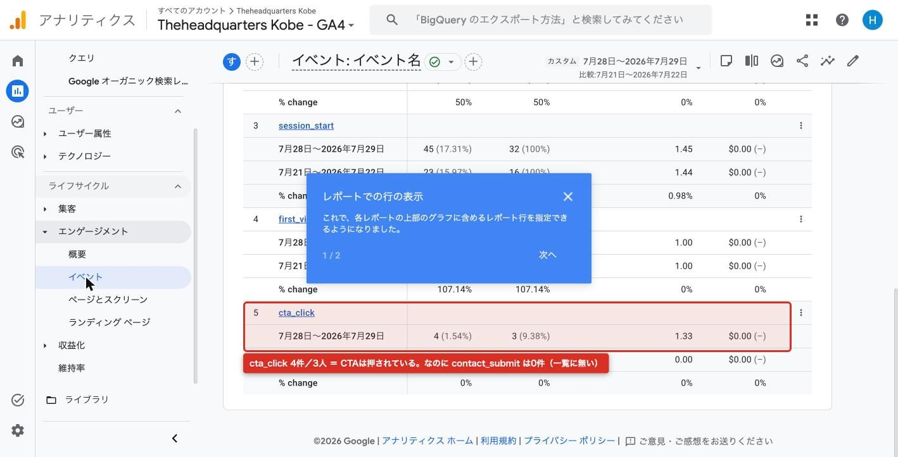
| イベント名 | 件数 | ユーザー数 | 前期間の件数 | 前期間のユーザー数 |
|---|---|---|---|---|
| page_view | 107 | 32 | 57 | 16 |
| user_engagement | 75 | 18 | 50 | 12 |
| session_start | 45 | 32 | 23 | 16 |
| first_visit | 29 | 29 | 14 | 14 |
| cta_click | 4 n不足 | 3 | 0 | 0 |
| contact_submit | 0（一覧に存在しない） | 0 | 0 | 0 |
| waitlist_submit | 0（一覧に存在しない） | 0 | 0 | 0 |
GA4のイベント一覧は、その期間に1回以上発生したイベントだけを行として表示します。contact_submit と waitlist_submit は一覧に名前が出てきません。これは「期間中0回」という意味です。cta_click は前期間0件から4件になっていますが、これは /kobe/ が7/28に公開されて初めて計測対象が存在したためで、比較になる前期間がありません。
/kobe/ に到達したのは13ユーザー、そのうちCTAを押したのが3ユーザーで 23.1% です n不足。3人／13人なので、1人の増減で約8ポイント動く水準です。傾向として受け取ってください。
ここから言えるのは「LPは合格」ではありません。言えるのは、LP内訴求が主要因である可能性は相対的に低いということです。到達した人のうち一定割合はCTAまで進んでおり、CTA以前（広告文とLPの訴求の食い違い、ファーストビューでの離脱）に致命的な断絶があるとは考えにくい、という消去法の読み方です。ボトルネックの候補はCTAより下流に残ります。
/kobe/ 到達/contact/ 到達CTAを押した3人のうち /contact/ に着いたのは2人で 67% です n不足。CTA7本すべてが /contact/ への素のリンクなので、この1人の差はリンク不良ではなく、遷移前に離れたか計測のタイミング差と考えられます。そして /contact/ に着いた2人から送信は0件でした。落ちているのはここから先です。詳細は次章で扱います。
3ユーザー／13ユーザーという母数では、CTAクリック率23.1%を業界水準や過去実績と比較できません。またこの4件がどのCTA（7本のうちどれ）から発生したかは、イベント一覧の件数だけでは分かりません。event_label は標準レポートの下部カードで確認できますが、link_text は「探索」でカスタムディメンションを追加しないと見られません。「CTA文言Aの方が押される」という比較は、8/18時点でもクリック数が足りない可能性があります。
CTAは押され、/contact/ にも到達しているのに送信は0件で、滞在は2秒です。計測は健全で速度も速いため、原因はフォームそのものの構造にあると考えられます。
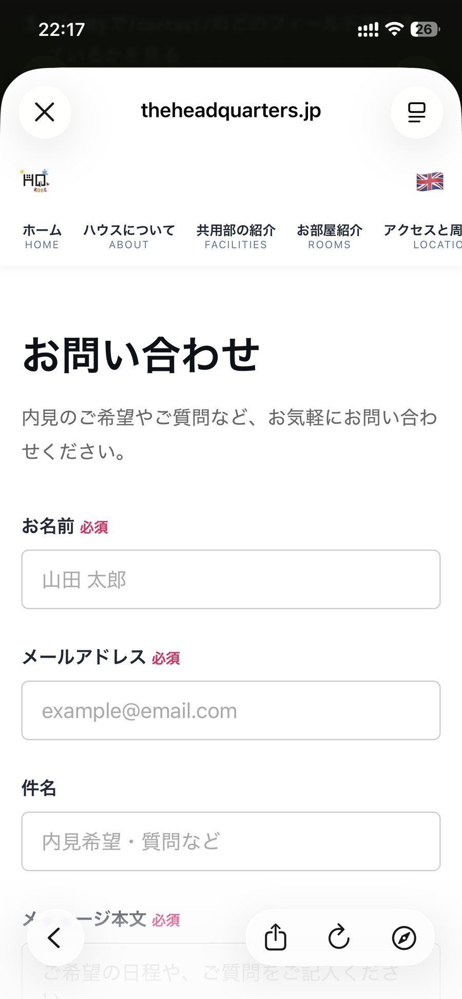
/contact/ ファーストビュー（上部に8リンクのナビが2段。メッセージ本文欄と送信ボタンは画面外）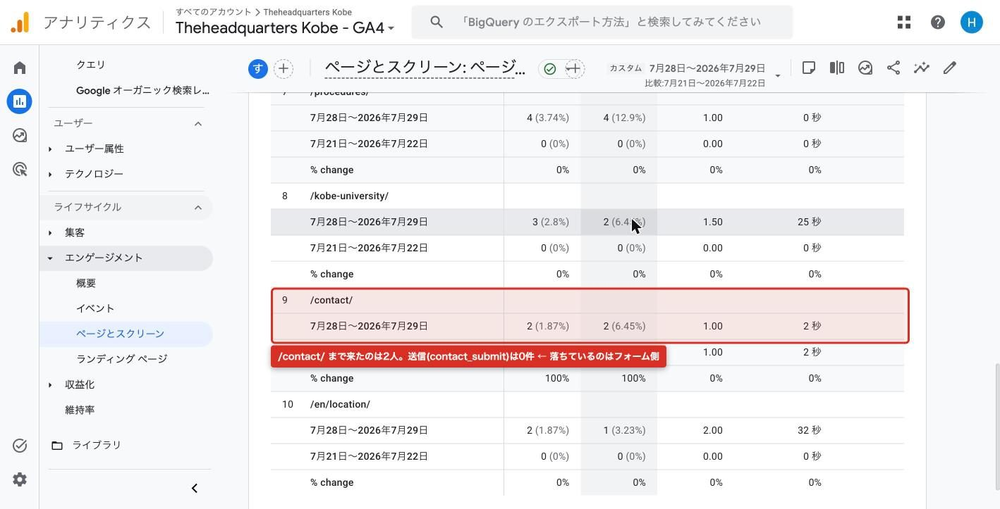
/contact/ 行（表示2・2ユーザー・滞在2秒）「送信されているのに記録されていないだけ」という可能性を先に潰します。コードとネットワークの実測結果は次のとおりです。
| 確認項目 | 実測 | 意味 |
|---|---|---|
/kobe/ のCTAリンク | 7本すべて素の <a href="/contact/"> | JSに依存せず遷移する。クリックが飲まれる余地がない |
| TTFB | 76ms | サーバー応答は速い |
| DOMContentLoaded | 100ms | 0.1秒でHTMLの解析完了 |
| 自前アセットの最遅 | 120ms | 自サイト側の読み込みは終わっている |
| load イベント | 6,272ms | ClarityとGA4の3rd partyスクリプト。DCL後に走るため描画は阻害しない |
| 送信の仕組み | preventDefault + fetch で Formspree へ非同期POST | ページ遷移しない。だから遷移計測では追えない |
| CV計測 | contact_submit をハンドラ内で発火 | 送信処理が走れば必ずイベントが出る実装 |
送信ハンドラの内側で contact_submit を発火させているため、送信が実行されていればイベントは記録されます。イベント一覧に contact_submit が存在しないということは、CV0は計測漏れではなく、実際に送信されていないということです。ここはコードとネットワークの実測に基づくので断定してよい部分です。
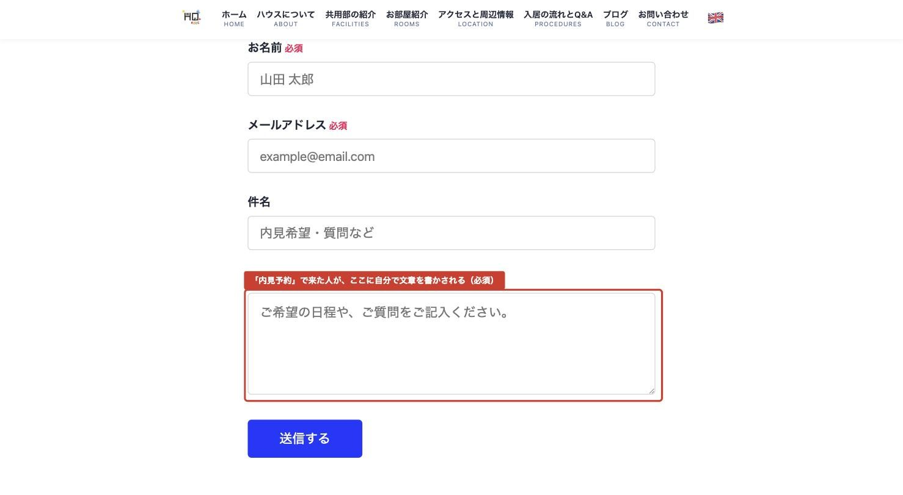
/contact/ フォームの実物（お名前・メールアドレス・メッセージ本文が必須。件名のみ任意）| 項目 | 種類 | 必須 | プレースホルダ |
|---|---|---|---|
| お名前 | テキスト | 必須 | 山田 太郎 |
| メールアドレス | メール | 必須 | example@email.com |
| 件名 | テキスト | 任意 | 内見希望・質問など |
| メッセージ本文 | テキストエリア（白紙のフリーテキスト） | 必須 | ご希望の日程や、ご質問をご記入ください。 |
必須は3項目で、そのうち1つが白紙のフリーテキストです。任意なのは件名だけです。加えて次が存在しません。
| あってよいもの | 現状 |
|---|---|
| 用件の選択肢（内見希望 / 空室確認 / 費用の質問 など） | なし |
| 希望日時の選択肢 | なし |
| 電話番号の導線 | なし |
| LINEの導線 | なし |
| メールリンク（mailto）の導線 | なし |
つまり、このフォームがCVへの唯一の経路です。さらに位置の問題があります。ページ全長は 1,098px、フォームの開始が上端から 259px、送信ボタン（180×60px）は上端から 860px にあります。iPhoneの実効表示領域は約 744px なので、送信ボタンは1画面目に入りません。図19のとおり、実機では入力欄が「お名前・メール・件名」まで見えて、必須のメッセージ本文欄と送信ボタンが画面外です。「あと1項目で終わる」ことが画面から見えない状態です。
/kobe/（LP） | /contact/（共通ヘッダー） | |
|---|---|---|
| 実装 | .s01-header（LP専用） | src/components/Header.astro（サイト共通） |
| position | sticky | sticky |
| 高さ | 70px | 900px以下で flex-wrap:wrap により2段化。デスクトップ時の高さが62pxなので、2段化でおおむねその倍（約124px）を占有する |
| ハンバーガー | あり（aria-label「メニューを開く」） | なし |
| ナビの挙動 | 折りたたみ | nav が overflow-x:auto、.internal-links が width:max-content で8リンク・幅 749px の横スクロールストリップ |
LPで「内見よやくする」を押した人は、ハンバーガー70pxのヘッダーから、2段化した横スクロールナビのページに移動します。章10でタップ最多だったのがLPのハンバーガーだったこととあわせると、ユーザーがヘッダーを操作の起点にしているのに、遷移先ではその起点が別物になっている構図です。見た目の連続性が切れる点と、上部の占有が100pxを超えてフォームがさらに下がる点の両方で不利になります。
広告とLPが約束しているのは「内見予約」です。CTAの文言も「内見よやくする→」「まずは内見からはじめる→」「内見・お問い合わせ→」です。しかし着地するのは汎用のお問い合わせフォームで、そこで求められるのは自分で文章を書くことです。日程を選ぶ画面ではありません。
これを最有力仮説として明示します。断定はしません。母数は /contact/ 到達2ユーザー・送信0件で、仮説を検証できる水準にありません n不足。検証方法は、フォームを改修したうえで cta_click → contact_submit の歩留まり（現在は3人→0人）を再測定することです。改修前後で同程度のCTAクリック数を集めて比較します。改修しないまま8/18を迎えると、この仮説は検証されないまま残ります。
/contact/ の平均エンゲージメント時間は 2秒です。TTFB76ms・DCL100msで技術的には高速なので、原因は速度ではありません。2秒は「ページを見て、何もせず戻った」という解釈から離れにくい数字です。
n=2の平均です n不足。1人の増減で大きく動く水準なので確定ではありません。またGA4のエンゲージメント時間は、そのページがセッションの最終ページ（離脱ページ）だった場合、次のイベントが発生しないぶん短く出る性質があります。2秒という値には、この計測上の性質が混ざっている可能性があります。「フォームを見て諦めた」と「離脱ページなので短く出た」を切り分けるには、Clarityのレコーディングで実際の操作を見る必要があります。
| 案 | 内容 | 工数 | 期待効果 |
|---|---|---|---|
| (a) | ヘッダーを /kobe/ と同じハンバーガー型に統一 | 小 | 上部占有が100px超→70px。8リンクの横スクロール解消。LPからの見た目の連続性が保たれる |
| (b) | 用件を選択式（内見希望 / 空室確認 / 費用の質問 など）＋希望日時を選択式にし、メッセージ本文を任意化 | 中 | 必須の白紙フリーテキストが消える。「内見予約」の約束と着地が一致する |
| (c) | LINE導線の追加 | 中 | フォームが唯一の経路という状態の解消。文章を書きたくない人の受け皿ができる |
| (d) | 送信ボタンを1画面目に入れる（フォーム開始位置と余白の調整） | 小 | 860px→744px以内。「あと少しで終わる」が画面から見える |
| (e) | /kobe/ のポラロイド2枚目の重なりを解消（.photo-frame--secondary が position:absolute＋transformで、狭い幅だと1枚目の裏に隠れる） | 小 | 見た目の品質。Clarityのデッドクリック7.89%（3セッション）の候補要素でもある |
優先順位は (a) と (d) を8/18の前に実施、(b)〜(c) は計測に触るため8/18の判定後です。(a)(d)はCSSとマークアップの調整でイベント実装に触りません。(b)(c)はフォーム項目とCV経路が変わるため、8/18の判定に使う数字の連続性が崩れます。
CVは通算11日で 1件、CPAは基準線に当てて黄（継続・上限内）です。7/28〜29のCV0件には、新LPの評価を左右する情報は含まれていません。
| 期間 | クリック | 費用 | CV | CVR | CPA | 基準線での判定 |
|---|---|---|---|---|---|---|
| 7/19〜7/27（旧LP・9日） | 44 n不足 | ¥4,134 | 1 | 2.27% n不足 | ¥4,134 n不足 | 黄（継続・上限内） |
| 7/28〜7/29（新LP・2日） | 15 n不足 | ¥1,424 | 0 | 0.0% | 算出不能 | 判定不能 |
| 7/19〜7/29（通算11日） | 59 n不足 | ¥5,558 | 1 | 1.69% n不足 | ¥5,558 n不足 | 黄（継続・上限内） |
目標¥2,000は超えていますが、撤退ラインの¥6,000には達していません。判定は「継続」の側です。ただしCV1件の平均なので、2件目が出た瞬間に大きく動きます n不足。
事実。7/28〜29はクリック 15・CV 0件でした。
期待値。旧LP期間のCVR 2.27% を当てると、15クリックからの期待CVは 0.34件です。期待値が0.34件のとき、もっとも起こりやすい結果は「1件も出ない」です。0件という結果に、新LPの評価を左右する情報は含まれていません。良いとも悪いとも言えません。
判定に必要な母数の逆算。CVRの比較ができる水準（CV5件）に必要な量は次のとおりです。
| 項目 | 値 | 備考 |
|---|---|---|
| CV5件に必要なクリック | 約 220クリック | CVR2.27%換算 |
| そのための費用 | 約 ¥20,680 | CPC¥94換算 |
| 月予算（日予算¥500×30日） | ¥15,000 | 現状 |
| 月予算で買えるクリック | 160クリック | |
| そのときの期待CV | 3.63件 | CV5件に届かない |
現在の予算では、8/18時点でも判定に必要な母数に届かない可能性があります。これはA5（日予算¥500を引き上げるか）に直接跳ね返ります。予算の議論は「表示を増やしたい」ではなく「判定に必要な母数を確保できるか」の話として扱うべきです。
章4の市場規模と接続します。主要KW「シェアハウス 神戸／神戸 シェアハウス」の月間検索は 590回です。インプレッションシェア（IS）を100%にするという非現実的な仮定を置いても、CTR13.53%を当てて月 79.8クリック、CVR2.27%で期待CVは月 1.81件にとどまります。
| 制約 | 内容 | 効くこと |
|---|---|---|
| 制約1：母数不足 | 月予算¥15,000＝160クリック＝期待CV3.63件 | 予算を増やせば緩む |
| 制約2：市場の天井 | IS100%でも月79.8クリック＝期待CV1.81件 | 予算を増やしても緩まない |
二重の制約がかかっている状態です。予算を増やすと判定に必要な母数には近づきますが、この主要KWだけでは月1.81件が上限です。予算の引き上げを検討する場合は、同時に対象キーワードを広げる（章4で挙げた未出稿KW候補）ことが前提になります。8/18に判断するのはこの2点セットです。
CV1件のCPAは「CPAが¥5,558である」という主張には使えません。1件が2件になればCPAは半分、0件だったら算出不能という水準です n不足。また新LPと旧LPのCVR比較は、新LP側が15クリック・0件なので成立しません。上の期待CV計算はすべてCVR2.27%（旧LP・44クリック・1件）を係数として使っており、その係数自体もn=1の推定です。数字の桁感を掴むための試算であり、予測ではありません。
経験値の係数を当てるとCV6〜9件で1契約（CV→契約率11〜17%）で、1契約あたり広告費は¥24,804〜¥50,022です。ただしこの歩留まりの実データは存在せず、記録を始めないと永久に埋まりません。
| 段 | 歩留まり（仮の係数） | 意味 |
|---|---|---|
| 問い合わせ → 内見 | 約 1/3 | 問い合わせ3件で1件が内見に進む |
| 内見 → 契約 | 1/2 〜 1/3 | 内見2〜3件で1件が契約になる |
| 合計（CV → 契約） | 11〜17% | CV 6〜9件で1契約 |
| 前提CPA | CV6件で1契約の場合 | CV9件で1契約の場合 |
|---|---|---|
| ¥4,134（7/19〜27） | ¥24,804 | ¥37,206 |
| ¥5,558（通算11日） | ¥33,348 | ¥50,022 |
これを、契約1件で回収する側の数字と並べます。
| 項目 | 金額 / 期間 |
|---|---|
| 空室1ヶ月の機会損失 | ¥53,000 〜 ¥61,000 |
| 平均入居期間 | 12ヶ月 |
| 1契約あたり広告費（通算CPA基準） | ¥33,348 〜 ¥50,022 |
1契約あたり広告費の上限側 ¥50,022 は、空室1ヶ月の機会損失（¥53,000〜61,000）とほぼ同額です。平均入居12ヶ月を前提にすれば、広告で埋めた1室は1ヶ月分の機会損失に相当するコストで12ヶ月分の収入を確保する計算になります。CPA上限¥6,000がこの構造から引かれています（機会損失 × CV→契約率11%）。
ただしこの試算の中で実測値なのはCPAだけです。歩留まりの2段はどちらも仮の係数で、実際に何%なのかはこの案件では分かっていません。この数字はGoogle AdsにもGA4にも存在しません。広告ツールが追えるのは「送信された」までで、その先の内見と契約は自分で記録するしかありません。CV→契約率が11%なのか5%なのか25%なのかで、CPAの許容ラインは倍以上動きます。8/18の継続/停止の判断は、この係数を仮のまま使うことになります。
この章の役割は、判断の分母を正しくすることです。広告費だけを見ると、実際にかかっているコストを過小に見積もることになります。
| 項目 | 金額 | 期間 / 単位 | 状態 |
|---|---|---|---|
| 広告費（Google Ads） | ¥5,558 | 11日（7/19〜7/29） | 実測 |
| Formspree（フォーム受信サービス） | 未確定 | プラン費用（月額） | 未確定 |
| Microsoft Clarity | ¥0 | — | 無料 |
| Google Analytics 4 | ¥0 | — | 無料 |
| LINE導線の構築 | 未確定 | 初期工数 | 未確定（章12の改修案(c)） |
| 運用工数 | 未確定 | 時間 | 未確定 |
金額が確定していないものは「未確定」と記載しています。推計で埋めていません。Formspreeのプラン費用と運用工数は、実際の請求額と実際にかけた時間を1度測れば確定します。それまでCPAの評価に含めていません。
CPA¥5,558（章13）は広告費のみの数字です。上の未確定項目が確定すると、1CVあたりの実コストはこれより上がります。CPA上限¥6,000という基準線は広告費ベースで引かれているため、未確定分が確定した時点で、上限の意味を「広告費のみで¥6,000」なのか「全コストで¥6,000」なのかを決め直す必要があります。8/18までにFormspreeのプラン費用を確認して、この表の1行を埋めてください。
この報告書で判定できるのは上流（表示・クリック・語句）までです。下流の6項目は、いつ・何があれば判定できるようになるかだけを確定させておきます。
/kobe/ の効果/kobe/ は10ページビュー・21タップ n不足。| 母数 | 読めること | 読んではいけないこと |
|---|---|---|
| クリック 30未満 | 件数の事実だけ（「15クリックあった」） | 率（CTR・CVR）の比較。前期間との優劣 |
| クリック 30〜100 | 傾向（「〜の可能性がある」） | 断定。「改善した」「効果があった」 |
| クリック 100以上 | 率の比較が可能 | 因果の断定（別の変更が同時に入っていないかを確認する） |
| CV 10件以上 | CVR・CPAの率としての議論 | CV10件未満での率の議論。1件の増減でCPAが倍動く |
この11日間はクリック59・CV1件です。上の表に当てると、クリックは「傾向」の帯に入り、CVは「件数の事実だけ」の帯にあります。8/18の判定も、月予算¥15,000のままなら CV は「件数の事実だけ」の帯に留まる可能性があります。章13の予算の議論と章17の次アクションはここから来ています。
8/18を待たずに着手できるものが4件あります。うち(1)(3)(4)の3件は計測実装に触れないため、8/18の判定に使う数字の連続性を壊しません（(2)の除外KW追加は配信対象が変わるので、実施日を記録しておきます）。8/18の判定は、下の画面チェックリストの順で見て分岐させます。
/contact/ のヘッダーを /kobe/ と同じハンバーガー型に統一する実装小・0円/contact/ のレコーディングを観察する所要10分・0円/kobe/ にします。| # | 画面 | 見る指標 | 判定分岐 |
|---|---|---|---|
| 1 | Ads → キャンペーン（期間比較ON） | クリック・CTR・CPC・費用・CV | クリックが累計220に届いているか。届いていなければCVRの比較には入らず、件数の事実だけで読む |
| 2 | Ads → キーワード → 品質スコア | 「シェアハウス 神戸」のQSと「LPの利便性」 | 「平均より下」→ 未反映。数ヶ月単位なので8/18時点の未改善は施策無効の証拠にしない ／ 「平均的」以上 → 7/29の速度改善が反映された |
| 3 | Ads → 検索語句 | 新しく出た語句・除外候補 | シニア系が再出現 → 除外の抜けを確認 ／ 40代が残っている → (2)が未反映 |
| 4 | GA4 → ページとスクリーン | /kobe/ のユーザー数・滞在、/contact/ の滞在 | /contact/ の滞在が2秒台のまま → フォーム側の問題が継続 ／ 数十秒に伸びた → 入力は始まっている（送信で落ちている） |
| 5 | GA4 → イベント | cta_click / contact_submit | cta_click あり × contact_submit 0 → フォーム側（章12の改修案(b)(c)へ）／ cta_click が少ない → LP上部の訴求（ファーストビューのCTA1本で勝負している構造なので、そこの文言と表示） |
| 6 | Clarity → ヒートマップ / レコーディング | ページビュー数・スクロール到達率・タップ上位 | 100ページビュー以上 → 到達率を率として読む ／ 未達 → 引き続き件数と構造だけを読む。タップ1位がハンバーガーのままか（回遊志向の継続）を確認 |
contact_submit の発火場所が変わり、AdsへのCVインポートに影響します。判定に使う数字の定義が変わるため、8/18の判定後に実施します。直近で着手が必要なのは(1)〜(4)の4件、合計コスト0円です。このうち(4)だけは、着手が遅れるほど後から取り返せません（記録がない期間の内見・契約は遡って復元できないため）。8/18に上のチェックリストを6画面順に見て、#5の分岐で「フォーム側」か「LP上部の訴求」かを決めます。
毎週これだけを見れば、異常の検知と8/18判定の準備が両方できます。合計10分です。
| 時間 | ツール / 画面 | 見る指標 | 異常のサイン | 詳しくは |
|---|---|---|---|---|
| Ads 4分 |
キャンペーン（期間：先週1週間） | クリック・CTR・CPC・費用・CV | CPCが¥100（上限）に張り付く／費用が日予算¥500×日数を大きく下回る | → 章8 |
| 検索語句 | 新しく出た語句・クリックのあった語句 | シニア系・求人系・他エリアが出る（除外の抜け）／自社指名が出ている（受け皿がない） | → 章5 | |
| キーワード → 品質スコア | 「シェアハウス 神戸」のQSと「LPの利便性」 | QSが7から下がる／IS損失(ランク)が62.68%から悪い方へ動く | → 章6 | |
| GA4 4分 |
レポート → エンゲージメント → ページとスクリーン | /kobe/ のユーザー数と滞在（基準29秒）、/contact/ の滞在（現状2秒） |
/kobe/ の滞在が29秒を大きく下回る／/contact/ が2秒台のまま |
→ 章9 章12 |
| レポート → エンゲージメント → イベント | cta_click の件数・ユーザー数、contact_submit が一覧にあるか | cta_click が0（LP上部の訴求）／cta_click ありで contact_submit が一覧に無い（フォーム側） | → 章11 章13 | |
| Clarity 2分 |
レコーディング（/kobe/ または /contact/ で絞る） |
セッション1本を再生。どこで止まったか | 本文欄で止まる／ナビを横スクロールしている／デッドクリックが出る | → 章10 章12 |
加えて、問い合わせが来た週だけ記録シート（章14の5列）に1行追加します所要1分・0円。この10分に含まれるのは確認だけで、改修の判断は8/18のチェックリスト（章17）で行います。
この案件で使っている設定値と基準線、および各指標を「いくらならどう読むか」だけを並べます。
| 項目 | 値 |
|---|---|
| Google Ads アカウント | 229-876-1950（ocid=8415800760） |
| キャンペーン | HQ-Search-01（ID 24040704846） |
| GA4 プロパティ | a135936060p366565170 |
| Microsoft Clarity プロジェクト | xqy9wgrfmx |
| 日予算 | ¥500 |
| 上限CPC | ¥100 |
| 入札戦略 | クリック数の最大化（上限CPC¥100） |
| キャンペーンの状態表示 | 「入札単価の設定が制限されています」 |
| 配信面 / マッチタイプ | 検索のみ。フレーズ一致・完全一致のみ |
| 広告グループと着地先 | 広告グループ 1 個（神戸×シェアハウス）→ /kobe/ ／ 02-エリア名（三宮・三ノ宮）→ /kobe/（ともに7/28変更）／ 03-神戸大学 → /kobe-university/ ／ 04-英語 → 英語ページ（/kobe/ は日本語のみのため据え置き） |
| 基準 | 金額 | 根拠 |
|---|---|---|
| 目標CPA | ¥2,000 | ひつじ不動産の問い合わせ課金（平均家賃の5%≒¥2,000/件）と同額。外部ポータルに払う額と同じなら、自社広告で獲る意味がある |
| 上限CPA（撤退ライン） | ¥6,000 | 空室1ヶ月の機会損失 ¥53,000〜61,000 × CV→契約率 11%（保守側） |
| CV→契約率 | 11〜17% | 問い合わせ→内見 約1/3 × 内見→契約 1/2〜1/3。仮の係数（実績なし） |
| CV / 1契約 | 6〜9件 | 上記の逆数 |
| 平均入居期間 | 12ヶ月 | 1契約の価値を測る前提 |
| 実測CPA（7/19〜27） | ¥4,134 | 黄（継続・上限内） |
| 実測CPA（通算11日） | ¥5,558 | 黄（継続・上限内） |
設定レベル：キャンペーン / インテント マッチ。
| # | 除外KW | # | 除外KW | # | 除外KW |
|---|---|---|---|---|---|
| 1 | 求人 | 7 | ゲストハウス 予約 | 13 | 50代 |
| 2 | バイト | 8 | ホテル | 14 | 60代 |
| 3 | 仕事 | 9 | 高齢者 | 15 | 70代 |
| 4 | 大阪 | 10 | 食事付き | 16 | 80代 |
| 5 | 京都 | 11 | 食事 付き | 17 | シニア |
| 6 | 姫路 | 12 | 長田 | 18 | 高齢 |
| 指標 | この案件での値 | いくらならどう読むか |
|---|---|---|
| IS（インプレッションシェア） | 32.41% | 出られる検索のうち3回に1回しか出ていない。残り67.6%の内訳（下2行）を見ないと打ち手が決まらない |
| IS損失（ランク） | 62.68% | 広告ランク不足で出られなかった分。この案件ではここが最大。上限CPC¥100 < 上部掲載入札の高額帯¥153 が効いている。予算を上げてもここは動かない |
| IS損失（予算） | 4.91% | 予算不足で出られなかった分。5%未満なら予算はほぼ足りている。「表示が伸びない原因は予算」ではないと読む |
| 重複率（オークション分析） | 20.19%（和楽居） | 同じオークションに両方出た回数の割合。20%なら5回に1回だけ同席している。低いほど「別の検索で戦っている」 |
| 上位掲載率（相手が自分より上に出た率） | 84.38%（和楽居） | 同席したときの負け率。8割超なら、同席した場面ではほぼ勝てていないと読む |
| 品質スコア（10点満点） | 主力KW「シェアハウス 神戸」7/10、最弱「神戸 大学 一人暮らし 家賃」3/10 | 7以上なら維持、4以下は要対処（章6の教育カードと同基準）、3は広告文・LP・KWの組み合わせを見直す水準 |
| ├ 推定クリック率 | 主力：平均より上 | 広告文とKWの噛み合い。「平均より上」なら広告文側は問題ない |
| ├ ランディングページの利便性 | 主力：平均より下 | 本命。7/29に速度対応（PageSpeedモバイル55→90）を実施したが未反映。Googleの再評価は数ヶ月単位 |
| └ 広告の関連性 | 主力：平均より上 | KWと広告文のテーマ一致。「平均より下」なら広告グループの分割を検討 |
| エンゲージメント時間（GA4） | /kobe/ 29秒 / トップ 12秒 / /contact/ 2秒 | 29秒なら読まれている側。2秒は「見て何もせず戻った」以外に解釈の幅が狭い。ただし離脱最終ページでは短く出る性質がある |
cta_click | 4件・3ユーザー | /kobe/ のCTA（7本すべて /contact/ への素のリンク）クリック時に発火。到達13ユーザーに対し23.1%。0件ならLP上部の訴求を疑う |
contact_submit | 0件（イベント一覧に存在しない） | /contact/ の送信ハンドラ内で発火（event_category: conversion）。preventDefault + fetch でFormspreeへ非同期POST。一覧に名前が出てこない＝期間中0回。実装が健全なので、0件は計測漏れではなく実際に送信されていないという意味 |
waitlist_submit | 0件（イベント一覧に存在しない） | AdsのCVインポート対象。同じく一覧に無ければ期間中0回 |
作成 2026-07-30 / 対象期間 2026-07-19〜2026-07-29 / 数値はすべて管理画面からの実測値。派生値は verify.py でコード検算済み。